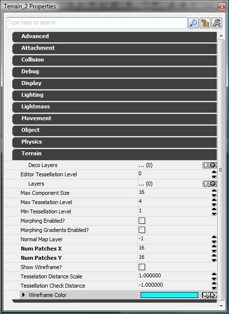
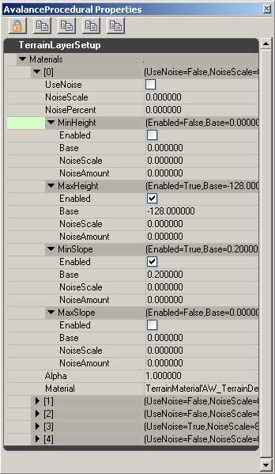

UDN
Search public documentation:
SettingUpTerrainCH
English Translation
日本語訳
한국어
Interested in the Unreal Engine?
Visit the Unreal Technology site.
Looking for jobs and company info?
Check out the Epic games site.
Questions about support via UDN?
Contact the UDN Staff
日本語訳
한국어
Interested in the Unreal Engine?
Visit the Unreal Technology site.
Looking for jobs and company info?
Check out the Epic games site.
Questions about support via UDN?
Contact the UDN Staff
在虚幻编辑器中设立地形
创建地形Actor
 可替换地，您可以使用actor浏览器，打开actor树结构的'Info'分支。在这个分支下面您将会看到‘Terrain（地形）’。
可替换地，您可以使用actor浏览器，打开actor树结构的'Info'分支。在这个分支下面您将会看到‘Terrain（地形）’。
 选择这个选项，并且再回到主编辑器视口。找到您希望地形的左下角放置的位置(如果需要，您可以稍后移动地形)。右击您希望放置地形的位置，然后像添加其它actor一样来添加地形actor。
这将会创建一个地形actor，从它延伸出的地形块组成了一个4乘4的方块。这是因为地形的默认设置为4乘4的地形块，即MaxTesselationLevel为4。
在非透视视图中，您将会看到以下图像，这将显示为有两个三角形组成的一个单独的四方形。由于渲染是在全分辨率下进行的，所以在透视视图中地形将显示为地形块组成的4乘4的网格。
选择这个选项，并且再回到主编辑器视口。找到您希望地形的左下角放置的位置(如果需要，您可以稍后移动地形)。右击您希望放置地形的位置，然后像添加其它actor一样来添加地形actor。
这将会创建一个地形actor，从它延伸出的地形块组成了一个4乘4的方块。这是因为地形的默认设置为4乘4的地形块，即MaxTesselationLevel为4。
在非透视视图中，您将会看到以下图像，这将显示为有两个三角形组成的一个单独的四方形。由于渲染是在全分辨率下进行的，所以在透视视图中地形将显示为地形块组成的4乘4的网格。

地形属性

展开这项，并设置 NumPatchesX 和 NumPatchesY 的值为期望的值。在进行任何细分之前，在这里设置的值是地形的最高密度。作为演示，我们将假设在地形的X和Y方向都有16块。您现在应该会看到一个很大的平面，并且它的上面具有默认的材质。现在，我们需要为地形创建层。 关于地形属性的全面参考指南，请参照地形参考指南页面。创建地形层
地形材质
 地形材质用于把您希望渲染的材质传递到地形层上。它们也包含很多其它属性，使得美术人员可以通过添加位移、植被或改变地形上材质的缩放比例来自定义那个材质。
如果想创建地形材质，可以通过使用File(文件)->new(新建)并选择TerrainMaterial(地形材质)或在浏览器(空白区域)右击并选择New TerrainMaterial(新建地形材质)来进行创建。这将会提示您命名该地形材质。当完成这个步骤后，右击新建的地形并选择Properties(属性)。这将会打开属性窗口，它包含三个类别。Displacement(位移)包含着关于在这个材质上使用位移贴图方面的设置，Foliage(植被)是一个可以展开的数组，它包含了可以在地形上渲染的网格物体(在第三部分中进行了讲解)，Material(材质)覆盖了用于渲染地形上的一个像素shader相关的属性。
地形材质用于把您希望渲染的材质传递到地形层上。它们也包含很多其它属性，使得美术人员可以通过添加位移、植被或改变地形上材质的缩放比例来自定义那个材质。
如果想创建地形材质，可以通过使用File(文件)->new(新建)并选择TerrainMaterial(地形材质)或在浏览器(空白区域)右击并选择New TerrainMaterial(新建地形材质)来进行创建。这将会提示您命名该地形材质。当完成这个步骤后，右击新建的地形并选择Properties(属性)。这将会打开属性窗口，它包含三个类别。Displacement(位移)包含着关于在这个材质上使用位移贴图方面的设置，Foliage(植被)是一个可以展开的数组，它包含了可以在地形上渲染的网格物体(在第三部分中进行了讲解)，Material(材质)覆盖了用于渲染地形上的一个像素shader相关的属性。
位移
DisplacementMap(位移贴图)使用灰度化贴图来沿着表面法线来移动地形的顶点。要想创建位移贴图，需要在绘图程序中创建一个贴图，且该贴图必须可以存储alpha通道，然后把那个位移贴图放置到那个通道中。把它保存为32位的.TGA文件，然后把它导入到虚幻引擎3.0中，在导入时请使用TC_DisplacementMap作为压缩格式。在TerrainMaterial(地形材质)的DisplacementMap(位移贴图)文本域中使用这个贴图。在DisplacementMap文本域下面的缩放因数用于调整位移的强度。植被
植被包含着一个空的数组，可以通过点击在FoliageMeshes(植被网格物体)右侧的‘+’标志来添加数组元素。向数组中添加一个空的元素后，将会出现一组选项，用于决定分配的网格物体将在哪里渲染及如何进行渲染。 StaticMesh(静态网格物体) - 输入您希望使用的作为植被的网格物体。 Material(材质) - 覆盖分配给网格物体的材质。 Density(密度) - 每个方格中网格物体的数量。 MaxDrawRadius(最大描画半径) - 您希望看到网格物体所在的最远距离 MinTransitionRadius(最小转换半径) - 在多远的距离时网格物体将会停止 混合/缩放。 MinScale(最小缩放因数) -非统一缩放因数。 MaxScale(最大缩放因数) -非统一缩放因数。 Seed -设置随机分布。 SwayScale(摇摆的缩放因数) - windsources(风源)的乘数 StaticLighting (静态光照)(标记) -为植被切换光照风格。材质
Material(材质)包含着关于shader(着色器)如何映射到地形上的选项。 MappingPanU -沿着U方向来偏移默认的映射的量 MappingPanV -沿着V方向来偏移默认的映射的量 MappingRotation -默认旋转的偏移值 MappingScale - 非统一缩放地形上的shader MappingType -决定了在地形上使用的映射平面 Material(材质) - 决定了在地形上使用哪个shader。地形层

TerrainLayerSetup(地形层设置)对象用于创建地形层。创建TerrainLayerSetup和创建TerrainMaterial是类似的，但是在这里我们不是分配要使用的shader(着色器)，而是分配TerrainMaterials(地形材质)。 TerrainLayerSetups(地形材质设置)可以包含任意多个您可以选择输入的TerrainMaterials(地形材质)，但是注意到这一点是很重要的，即地形材质是从上到下堆叠的，所以元素[0]将会渲染在元素[1]的上面。 这是TerrainLayerSetup(地形层设置)中的设置项的列表。 UseNoise(使用噪声) -设置这项，则可以为这个地形材质启用噪声。 NoiseScale(噪声缩放比例) -如果启用了UseNoise，这个值决定了噪声的缩放因数值。 NoisePercent(噪声百分比) -该材质的噪声的程度。该值大多数在0.00到1.00范围内。 Min/MaxHeight(最小/最大 高度) -在程序上的形纹理描画中使用。如果地形在属性的限定设置之内，将会区间限定这个材质来进行渲染。 Enabled(启用) -如果该项标志为真，那么将会在程序上进行纹理描画时启用这个分支。 Base(基值) -世界空间中的一个值，材质将会被区间限定为这个值范围内。如果设置最小值为128、最大值为1024，那么将会导致仅当地形高度在这两个值之间时材质才会出现。 NoiseScale(噪声缩放因数) - 影响基本高度的噪声的频率。较小的值将会产生更多的噪声。 NoiseAmount(噪声量) -添加到基础量上的噪声的量。 Min/MaxSlope(最小/最大 斜坡) -当在程序中进行地形的纹理描画时使用。如果地形的角度在属性的限定设置之内，将会区间限定材质来进行渲染。 大多数属性和 Min/MaxHeight 类似。 Base(基值) 在这种情况下，它是指斜坡的角度。0是指0度，1是45度，当缩放到90度时将是无穷大。 Alpha - 地形层的这部分在地形上进行描画的总体强度。设置值为.5将会在地形上半透明地渲染当前地形材质。 Material(材质) - 在这个层中所要使用的地形材质。装饰层
 Decoration Layers (Deco Layers)[装饰层]用于向地形中添加细节物体。这些物体可以和玩家进行完全的碰撞、接受光照并投射阴影。
在一个单独的装饰层中使用多个静态网格物体是可能的，但是如果处于这种情况，当描画那个层时，它将会随机地从那个装饰层中选择一个网格物体进行应用。创建多个装饰层使您可以对网格物体的放置有更加精确的控制。
装饰层直接地出现在地形Actor的Terrain(地形)属性下，层可以使用像添加其它动态数组元素一样的方式来进行添加。这些层中的每一个都有自己的 Name(名称) ，它将会出现在地形工具里面。
在 Name(名称) 下面是 Decorations(装饰物) ，它是另一个数组。在这个数组中创建一个元素，将会出现一些设置，这些设置用于决定将会使用哪个网格物体、那个网格物体的如何出现以及它的放置位置。
Factory - 这允许您定义一个
Decoration Layers (Deco Layers)[装饰层]用于向地形中添加细节物体。这些物体可以和玩家进行完全的碰撞、接受光照并投射阴影。
在一个单独的装饰层中使用多个静态网格物体是可能的，但是如果处于这种情况，当描画那个层时，它将会随机地从那个装饰层中选择一个网格物体进行应用。创建多个装饰层使您可以对网格物体的放置有更加精确的控制。
装饰层直接地出现在地形Actor的Terrain(地形)属性下，层可以使用像添加其它动态数组元素一样的方式来进行添加。这些层中的每一个都有自己的 Name(名称) ，它将会出现在地形工具里面。
在 Name(名称) 下面是 Decorations(装饰物) ，它是另一个数组。在这个数组中创建一个元素，将会出现一些设置，这些设置用于决定将会使用哪个网格物体、那个网格物体的如何出现以及它的放置位置。
Factory - 这允许您定义一个 StaticMeshFactory ，它包含着这些设置：您希望使用的网格物体、那个网格物体在游戏中或在编辑器是否可见、它是否投射阴影以及它如何同玩家及世界进行碰撞。
MinScale(最小缩放因数) -网格物体出现时的最小比例值。
MaxScale(最大缩放因数) -网格物体出现时的最大比例值。
Density(密度) -当描画时，要放置的网格物体的密度。
SlopeRotationBlend(斜坡旋转度混合) -传递到在地形上描画的网格物体的地形角度的百分比。
RandSeed(随机数种子) -网格物体放置位置的随机数种子。